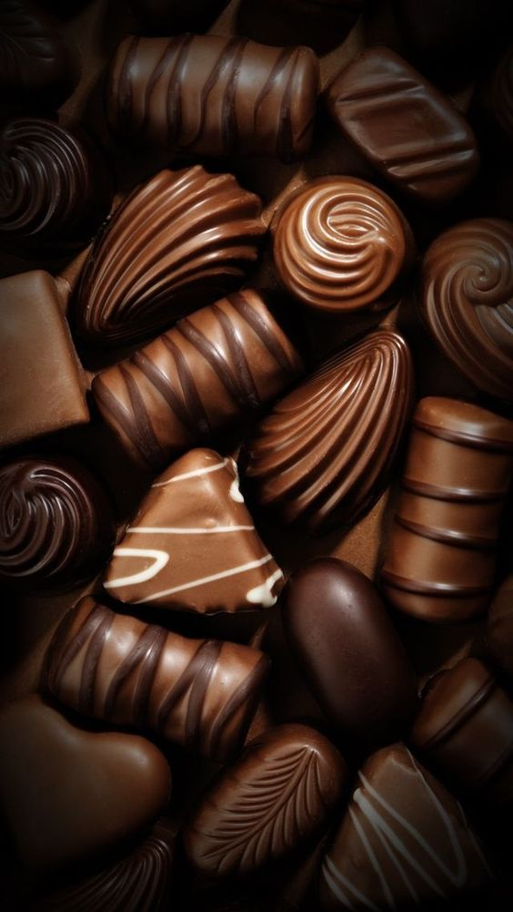
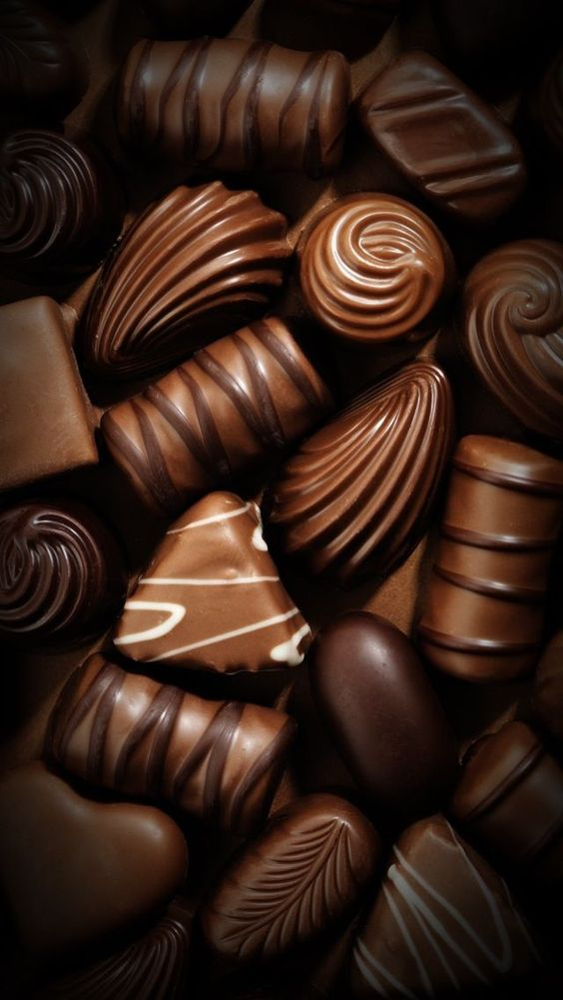

밀크 초콜릿
밀크 초콜릿의 역사는 19세기 중반으로 거슬러 올라갑니다. 초콜릿은 원래 카카오와 설탕만으로 만들어졌으며, 주로 다크 초콜릿 형태로 존재했습니다. 그러나 스위스의 두 기업가가 밀크 초콜릿의 개발에 중요한 역할을 했습니다. 1875년, 스위스의 다니엘 페터는 우유를 첨가한 초콜릿을 만드는 방법을 고안했습니다. 그는 액체 우유 대신 건조 우유를 사용하여 초콜릿을 만들었는데, 이는 초콜릿의 보관 기한을 늘리는 데 도움이 되었습니다. 다니엘 페터는 앙리 네슬레와 협력하여 건조 우유를 대량으로 생산하고 이를 초콜릿 제조에 활용했습니다. 네슬레는 건조 우유의 발명가로, 그의 기술은 밀크 초콜릿의 대량 생산을 가능하게 했습니다. 이후 밀크 초콜릿은 전 세계적으로 인기를 끌게 되었으며, 다양한 초콜릿 제품의 기본 재료로 사용되고 있습니다.
밀크 초콜릿의 제조 과정
카카오 원두를 수확하여 발효 및 건조 과정을 거칩니다. 건조된 카카오 원두를 로스팅(볶음)하여 풍미를 강화합니다. 로스팅된 원두를 분쇄하여 카카오 매스를 만듭니다. 카카오 매스에 설탕과 건조 우유(또는 연유)를 첨가하여 혼합합니다. 이 혼합물에 카카오 버터를 추가하여 부드럽고 크리미한 질감을 만듭니다. 혼합물을 정제기(conche)에 넣고 오랜 시간 동안 휘저어 부드러운 질감을 만듭니다. 이 과정은 초콜릿의 맛과 질감을 향상시킵니다. 템퍼링(tempering) 과정을 통해 초콜릿의 결정 구조를 안정화시켜 부드럽고 광택 있는 질감을 만듭니다. 이 과정은 초콜릿의 녹는 점을 조절하고, 부드러운 식감을 유지하는 데 중요합니다. 템퍼링된 초콜릿을 몰드에 부어 원하는 형태로 성형합니다. 성형된 초콜릿을 냉각하여 고체 상태로 만듭니다.
 
